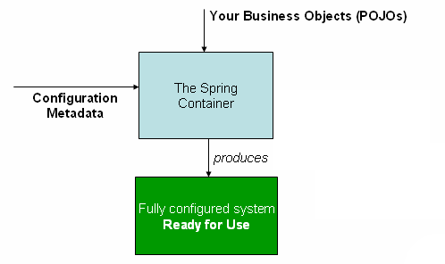

title: Spring IoC Containe
author:
name: kevinjom
twitter: kevinjom
url: http://kevinjom.github.io
theme: jdan/cleaver-retro
controls: false
style: style.css
output: spring-ioc-basic.html
–
Spring IoC Container
–
Case
We want to build an application which acts like a social media facade, when you want to post a message to your social media account, you just post to this app, it will post the message to your social accounts.
–
Case
Components

–
Case
Plain Old Java way
(demo)
–
What is IoC
DI vs IoC
DI is a concret form of IoC
–
Why is it
- flexibility
- easy to change the implementation
- readability
- simpler code
- testability
- easy to test, because the dependencies are injected (created outside), so its easy to use stub or mocks.
–
How (in Spring)

–
IoC Containers
A colleciton of dependencies
- register dependencies
- dependency injection
- get dependencies
Spring provides
- BeanFactory
- ApplicationContext
–
Congiuration metadata
configuration metadata represents how you as an application developer tell the Spring container to instantiate, configure, and assemble the objects in your application
Spring supports
- xml
- java configuration
–
Instantiating a container
(demo code)
–
Use beans
(demo code)
–
BeanFactory or ApplicationContext
ApplicationContext please
ApplicationContext can do all the things BeanFactory does, and also:
- Automatic BeanPostProcessor registration
- Automatic BeanFactoryPostProcessor registration
- Convenient MessageSource access (for i18n)
- ApplicationEvent publication
–
DefaultListableBeanFactory
Currently,all the internal ApplicationContext use DefaultListableBeanFactory to as the bean container
–
Instantiating a bean
- constructor
- static fm
- instance fm
- FactoryBean
–
Constructor Injection vs Setter Inection
follow Mr Jay, Constructor Injection please
(demo code)
–
Bean Scope
- singleton(default)
- prototype
- request
- session
- global-session
–
Bean Scope
You cannot dependency-inject a prototype-scoped bean into your singleton bean, because that injection occurs only once
method injection?
–
Autowire
The Spring container can autowire relationships between collaborating beans
Autowiring modes
- no
- byType
- byName
- constructor
–
@Autowired
- autowiring by type
- indicate this dependent bean is required
- BeanFactory supports? maybe NOT
@Resource - by name
–
Component Scan
Instaed of configure beans by yourself, let spring find them and configure them for you
enable it by
1 | <context:component-scan base-package="com.github.kevinjom"/> |
–
What are they scanning?
- @Component
- @Service
- @Repositry
- @Controller
- @RestController
–
Java Configuration
- @Configuration
- @Bean
- @Scope
- @ComponentScan
–
Java Configuration
(demo)
–
Lifecycle

–
Lifecycle
- Bean lifecycle callbacks
- Aware interfaces
- Container extension points
–
Bean lifecycle callbacks
- Init callbacks
- Desctruction callbacks
–
Init callbacks
- PostConstruct
- InitializingBean
- custom init method
–
Desctruction callbacks
- PreDestory
- DisposableBean
- custom destroy method
–
Aware interfaces
- ApplicationContextAware
- ServletContextAware
–
Container extension points
- BeanPostProcessor
- BeanFactoryPostProcessor
–
BeanPostProcessor
1 | public interface BeanPostProcessor { |
–
ApplicationContextAwareProcessor
1 | class ApplicationContextAwareProcessor |
–
BeanFactoryPostProcessor
1 | public interface BeanFactoryPostProcessor { |
–
WebApplicationContext
We are doing WEB things. YES!!!!
1 | public interface WebApplicationContext extends ApplicationContext { |
–
Spring MVC
offical

–
Spring MVC
from someone I dont know but I like it

Spring boot
Powered by Spring MVC
you may have known
WebApplicationContextand spring mvc, NOW letsDIY a spring-boot app
(demo)
–
Summary
- Spring has two types of IoC Containers
- We can config spring through XML and Java Config
- Use FactoryBean to instantiate a bean unless you cannot use constructor
- Constructor injection please
–
Summary
- Don’t dependency-inject a prototype-scoped bean into your singleton bean
- Use java config if you can, but don’t hate XML
- Use lifecycle callbacks unless you cannot do it easily through other solution
- Spring mvc is the woman behind spring-boot, love it and understand it
–